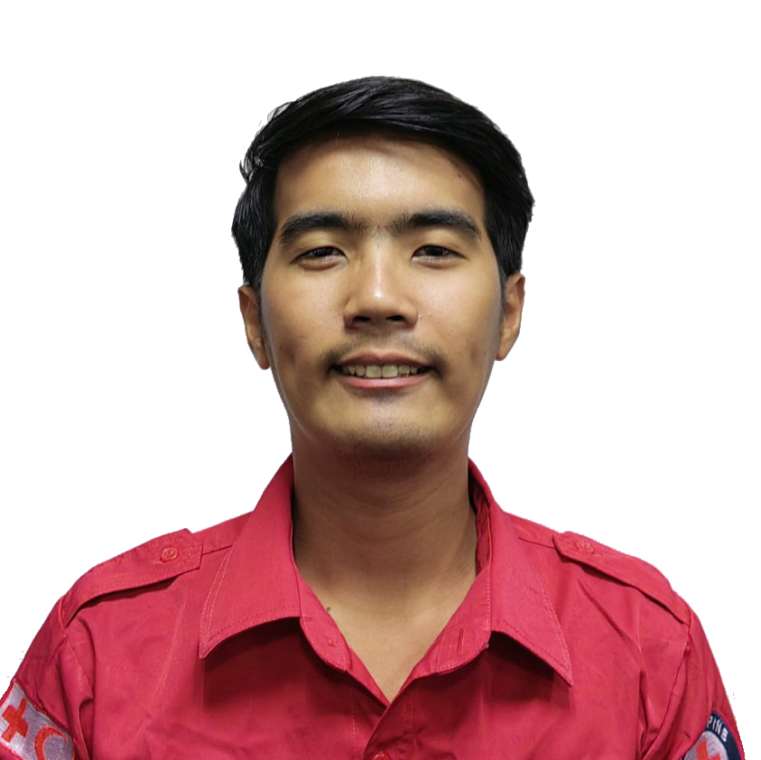

JAYSON B. PAITAN#5 Capistrano Street, |
 |
| 2014-2017 | TERTIARY: AMA COMPUTER COLLEGE PASIG CITY |
|---|---|
| BACHELOR OF SCIENCE INFORMATION TECHNOLOGY |
| June 2021 – Present | WENERGY GLOBAL |
|---|---|
| GRAPHIC DESIGNER (Remote-Singapore) | |
| June 2022 – Present | PHILIPPINE RED CROSS |
| GIS OFFICER | |
| Oct 2018 – June -2022 | PHILIPPINE RED CROSS |
| GIS TECHNICIAN | |
| Oct 2017 – Aug 2018 | PHILIPPINE RED CROSS |
| WEB DEVELOPER | |
|
|
| Sept 2016 — Dec 2016 | KEYSQUARE, INC. |
| IT SUPPORT (OJT) |
PROGRAMMING SKILLS:
|
HARDWARE SKILLS:
|
APPLICATION SKILLS:
|
PROJECT: OPCEN DASHBOARD
PROJECT: PMER DASHBOARD
PROJECT: OPCEN GIS DASHBOARDS
THESIS/CAPSTONE PROJECT: “DEVELOPMENT OF A WEB-BASED REGISTRATION SYSTEM FOR PRIMA PASTA”
PROJECT: “WEB ATTENDANCE WITH QUERY”
PROJECT: “PORTFOLIO”
PROJECT: "RESUME”